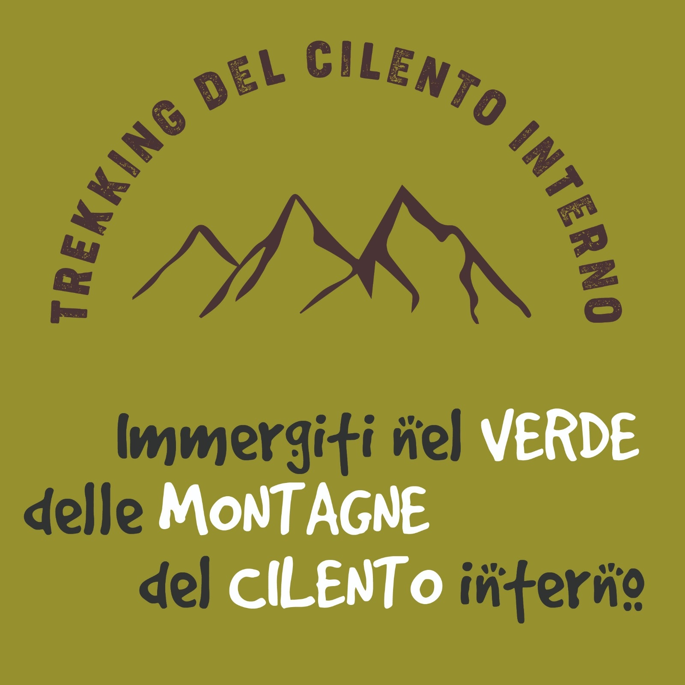

Per iniziare...
Chi Siamo - Dove Siamo
Le attività di trekking si svolgono nei pressi del comune di LAURINO Mostra come raggiungerci , in collaborazione con il personale della Palestra "PERSONAL FITNESS".
- Percorsi di trekking ed esperienze Eno-Gastronomiche in strutture convenzionate, proposte in tre diversi PACCHETTI;
- Specialista del fitness come ACCOMPAGNATORE durante tutta l'esperienza per fondere divertimento e attività sportiva;
Come contattarci
Per Info e Prenotazioni:


Regole Attività OUTDOOR
Per affrontare il percorso nel migliore dei modi è consigliabile seguire le seguenti regole:
- Indossare abbigliamento tecnico;
- Vestirsi a “cipolla”;
- Scarpe da trekking (OBBLIGATORIE);
- Bastone da trekking;
- Zaino, Cappello;
- K-way;
- Acqua (almeno 1.5 litri);
Strutture convenzionate
Le strutture convenzionate che consentono la degustazione dell'eno-gastronomia tipicamente cilentana e non solo, sono due:
Percorsi di trekking
Attraverso i seguenti due percorsi di trekking potrete scoprire le meraviglie del cilento interno:
Requisiti di partecipazione
Cosa dovete sapere per iniziare a meditare di intraprendere questa sfida:
- Voglia di mettersi in gioco con un'attività di fatto sportiva che vi consentirà di testare il vostro grado di forma fisica!
- Accompagnatore professionale a completa disposizione di gruppi che devono includere fra le 8 e 15 persone (OBBLIGATORIE)
Pacchetti disponibili
Percorso UNO
Gorgonero (Laurino) - Chalet Nicoletti (Vesalo)
Percorso di trekking dal Comune di Laurino verso la località Vesole
È un trekking molto suggestivo e di particolare bellezza che parte da “Gorgonero” e termina allo “Chalet Nicoletti”. Nel primo tratto del percorso troviamo due ponti medievali a schiena d’asino situati sul limpidissimo fiume “Calore” e nei pressi della cappella di S.Elena. Il cammino prosegue in salita tra boschi di cerro, faggio e prati di piante selvatiche. Dopo circa 6/7 Km si raggiunge la “Grava di Vesalo”, per poi proseguire verso lo Chalet Nicoletti.
Timeline del percorso in basso.
- 8:00
- 8:30
- üèîÔ∏è
- 12:30
- 16:00
- üèîÔ∏è
Percorso DUE
Ponte Stato (Laurino) - Azienda Agricola Ausòno (Valle dell'Angelo)
Percorso di trekking dal Comune di Laurino verso una delle strutture convenzionate della zona
Il percorso parte alle pendici della rupe di Laurino. A partire da uno dei più suggestivi punti la strada vecchia di collegamento con Felitto, si snoda intorno all’antica rocca ducale e giunge sino a Gorgonero. Seguendo un vecchio tratturo fra le rocce arriva a Valle dell’Angelo passando per una delle caratteristiche strade vicinali, cinta di muri a secco, incrociando peraltro la via del sale e il percorso di Pescorubino e altre mulattiere tuttora in uso per transumanze.
Timeline del percorso in basso.
- 9:00
- 9:30
- üèîÔ∏è
- 12:00
- 16:00
- üèîÔ∏è